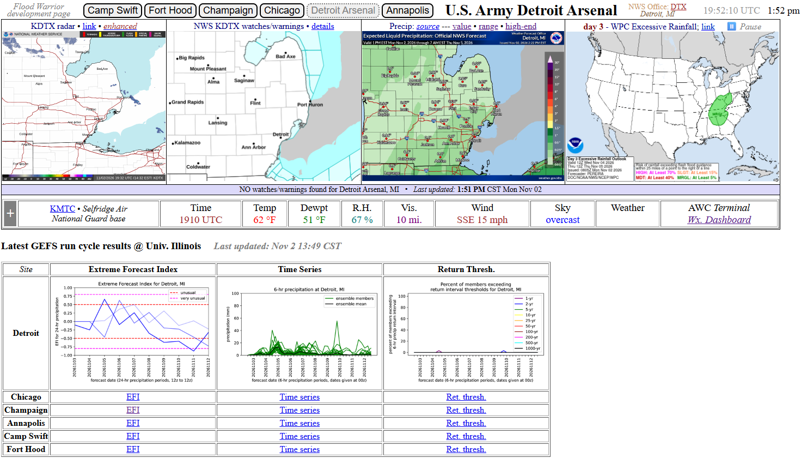
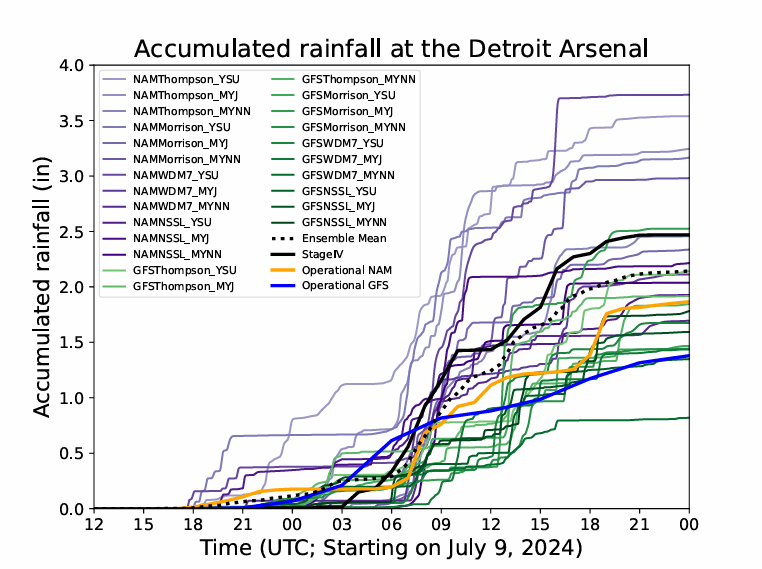
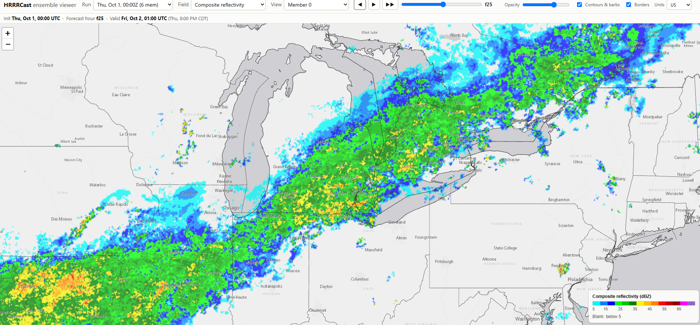

Detroit Arsenal Weather Dashboard
Radar, official forecasts, and Global Ensemble Forecast System (GEFS) guidance for Detroit Arsenal.

Example view. Open the dashboard for current information.
Open Dashboard →High-resolution rainfall ensembles for flood forecasting.
Led by Francina Dominguez
The Atmospheric Science team uses the Weather Research and Forecasting (WRF) model to simulate heavy rainfall at high resolution. These simulations capture small-scale convective motions that can produce intense, flood-causing rainfall.
By varying initial conditions and model physics, the team builds an ensemble: a set of simulations representing plausible outcomes for the same storm. Differences among these simulations describe uncertainty in rainfall timing, location, and amount, helping inform decisions before an event.
Four example ensemble members show how simulated storm structure and rainfall patterns differ across the Great Lakes. Their labels identify the forcing and model-physics configurations.
Radar reflectivity at 18:00 UTC on July 10, 2024, in decibels of reflectivity (dBZ).
Total accumulated rainfall, in inches, from the same four ensemble members.

The members vary in the timing of the heaviest rain and in the final accumulation. These rainfall trajectories can serve as inputs to a hydrology model, carrying precipitation uncertainty into flood forecasts for Detroit Arsenal.
At each location, the ensemble’s rainfall totals define a distribution. The 50th percentile is its median, while the 75th and 90th percentiles show progressively wetter outcomes. The 90th percentile can help planners examine a high-rainfall scenario.
Total accumulated rainfall in inches. The red star marks Detroit Arsenal.
Radar, official forecasts, and Global Ensemble Forecast System (GEFS) guidance for Detroit Arsenal.

Example view. Open the dashboard for current information.
Open Dashboard →Explore ensemble forecasts by model run, weather field, and forecast hour in the Illinois viewer.

Example view of the experimental ensemble viewer.
Open Ensemble Viewer →Figures and examples: Atmospheric Science Team. Image Credits